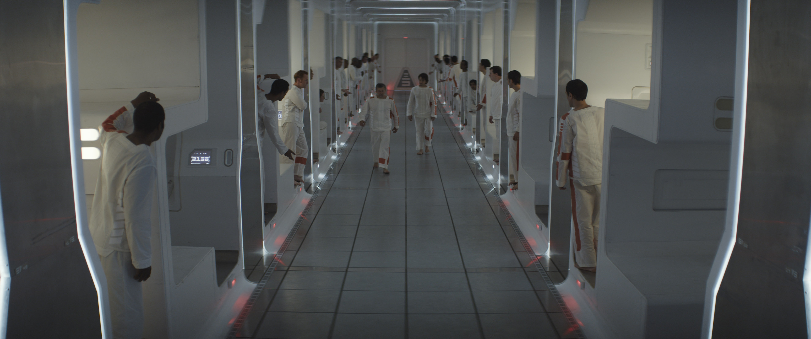
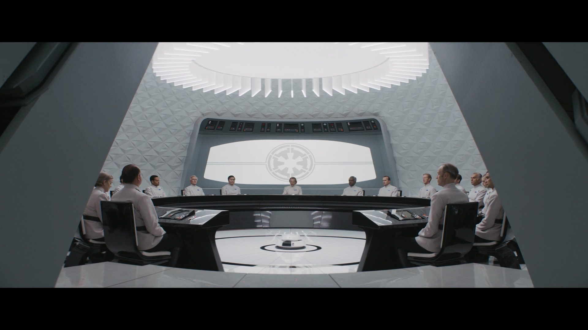
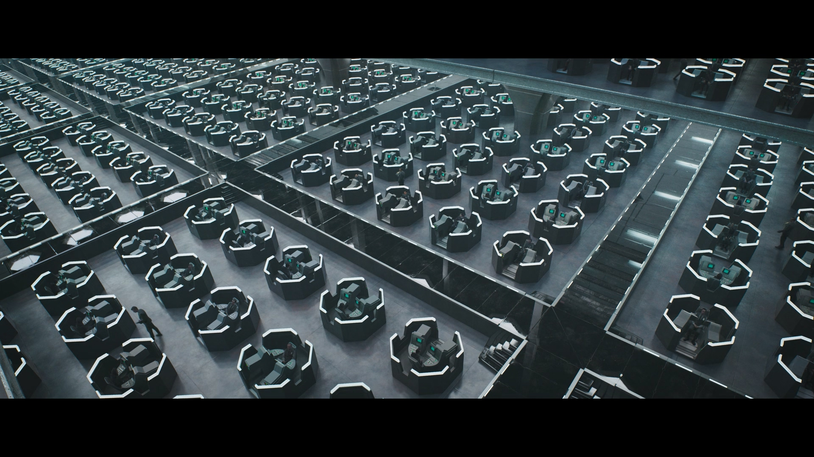

《安多》不短的评
最近二刷完《安多》，随便说几句。
放张镇帖图先。

反正是随便说几句就想说啥说啥了。
以下纯属个人基于剧集的口嗨和猜测。别杠，杠就是你对
情节
本剧个人认为叙事比较开阔，它不仅仅像是曼达洛人前两部那样只写主角一条线，《安多》这部剧从安多本身出发，拓展出很多义军成立前的一个个反帝的小个体小组织。
但他又并非是《义军崛起》那样（不过《义军崛起》基本也是主角团一条线），《安多》的格局显然要开阔很多。
这部剧已经有些脱离个人英雄主义的味道了，“星星之火”，放到这部剧中来说挺合适的。
分别看看每个人：
先看看安多个人。
安多曾是一个克纳里的小毛孩，被玛尔瓦带走后见证了许多事，包括国家底层人民的艰难的生活、小偷小摸的事情、战争以及对安多很重要的事件克莱姆之死。
从卢森来费里克斯摇走安多开始，安多从逃出费里克斯时的些许迷茫，不敢肯定自己、不愿加入卢森的小团体；到抢完一票后，受内米克的影响，渐渐醒悟；再到越狱后更深刻地明白帝国的黑暗；最后在费里克斯受母亲一番话（虽然是讲给全费里克斯的），坚定地成为了青年反帝战士（:P）。
再看看安多他娘玛尔瓦。
。。。（算了懒得码字了，我是懒批。。。）
还有内米克，以及卢森和南大。
。。。（😓😓😓）
总之，用内米克的话来形容这部剧：
There will be times when the struggle seems impossible.
I know this already.
Alone, unsure, dwarfed by the scale of the enemy.
Remember this.
Freedom is a pure idea.
It occurs spontaneously and without instruction.
Random acts of insurrection are occurring constantly throughout the galaxy.
There are whole armies, battalions that have no idea that they’ve already enlisted in the cause.
Remember that the frontier of the Rebellion is everywhere.
And even the smallest act of insurrection pushes our lines forward.
And then remember this.
The Imperial need for control is so desperate because it is so unnatural.
Tyranny requires constant effort.
It breaks, it leaks.
Authority is brittle.
Oppression is the mask of fear.
Remember that.
And know this, the day will come when all these skirmishes and battles, these moments of defiance will have flooded the banks of the Empire’s authority and then there will be one too many.
One single thing will break the siege.
Remember this. Try.
个人认为这部剧让星战这系列“太空歌剧”带上了更多的现实主义的味道，它才是我心目中的《义军崛起》。
视觉效果
我相当外行，以下只是随口扯几句。
有个地方挺明显的，就是在科洛桑或者帝国设施内的色调和其他地方比如费里克斯一冷一暖对比是挺强烈的：
帝国：



费里克斯：


我的评分：⭐⭐⭐⭐⭐（5/5）
（有空去三刷。。）